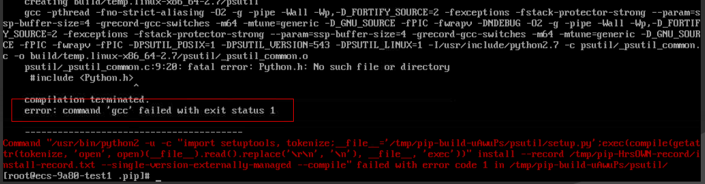
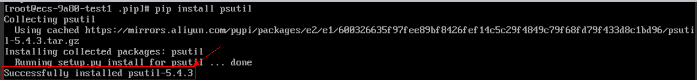

Symptom
When installing the Python library software, you need to configure the PIP source. Take the official image source as an example:
[root@test home]# cat /root/.pip/pip.conf
[global]
index-url = https://pypi.python.org/simple
trusted-host = pypi.python.org
During the installation, the system displays the message "command ´gcc´ failed with exit status 1". However, GCC has been installed by running the yum command before the Python library software is installed using the PIP.
Figure 1 Installation error

Possible Causes
openssl-devel is not supported.
Solution
The following operations use psutil as an example:
- Run the following command to install openssl-devel:
yum install gcc libffi-devel python-devel openssl-devel -y
- Use PIP to install the Python library software again. The error message is cleared.
Figure 2 Successful installation
